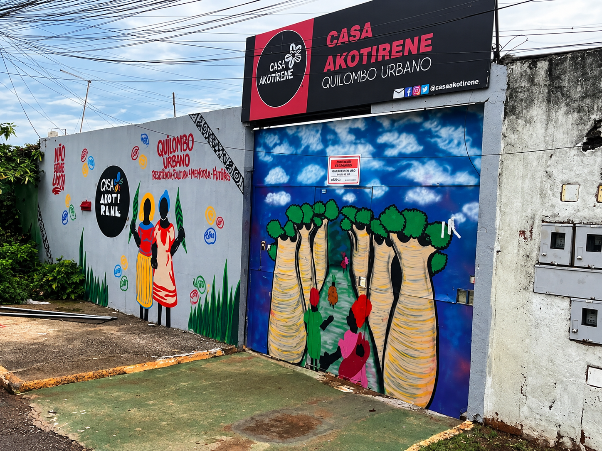

Casa Akotirene
Localização: Ceilândia - DF

Cultura e comunidade
A Casa Akotirene é um espaço comunitário de Ceilândia ligado a iniciativas culturais, educativas e de valorização da cultura afro-brasileira. Consulte os canais do espaço para saber sobre atividades e visitação.